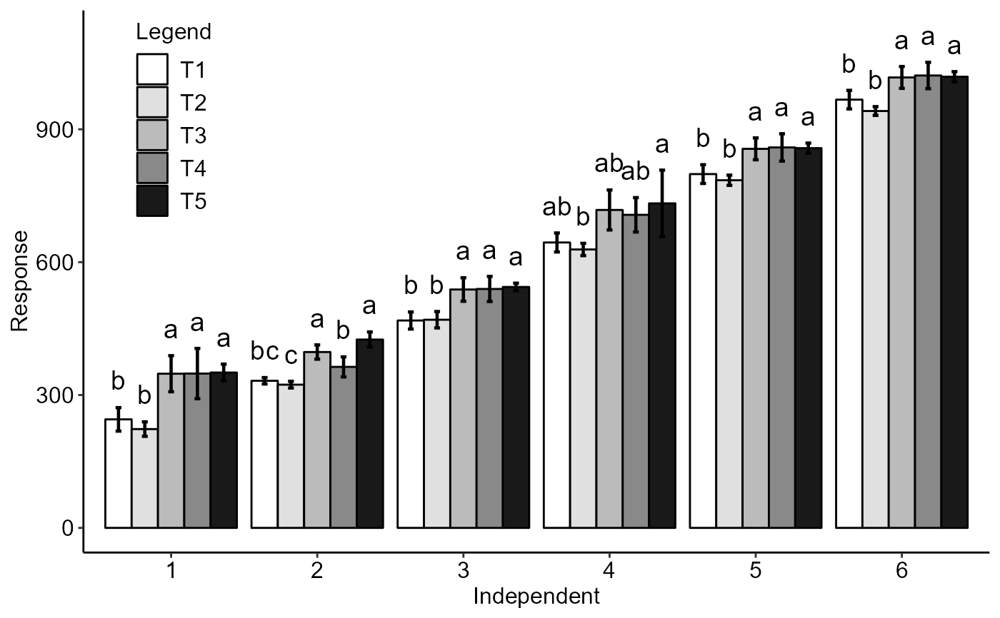

DICT.RdFunction of the AgroR package for the analysis of experiments conducted in a completely randomized, qualitative, uniform qualitative design with multiple assessments over time, however without considering time as a factor.
DICT( trat, time, response, alpha.f = 0.05, alpha.t = 0.05, mcomp = "tukey", theme = theme_classic(), geom = "bar", xlab = "Independent", ylab = "Response", p.adj = "holm", dec = 3, fill = "gray", error = TRUE, textsize = 12, labelsize = 5, family = "sans", sup = 0, addmean = FALSE, legend = "Legend", ylim = NA, width.bar = 0.2, size.bar = 0.8, posi = c(0.1, 0.8), xnumeric = FALSE, all.letters = FALSE )
| trat | Numerical or complex vector with treatments |
|---|---|
| time | Numerical or complex vector with times |
| response | Numerical vector containing the response of the experiment. |
| alpha.f | Level of significance of the F test (default is 0.05) |
| alpha.t | Significance level of the multiple comparison test (default is 0.05) |
| mcomp | Multiple comparison test (Tukey (default), LSD ("lsd"), Scott-Knott ("sk"), Duncan ("duncan") and Kruskal-Wallis ("kw")) |
| theme | ggplot2 theme (default is theme_classic()) |
| geom | Graph type (columns - "bar" or segments "point") |
| xlab | treatments name (Accepts the expression() function) |
| ylab | Variable response name (Accepts the expression() function) |
| p.adj | Method for adjusting p values for Kruskal-Wallis ("none","holm","hommel", "hochberg", "bonferroni", "BH", "BY", "fdr") |
| dec | Number of cells |
| fill | Defines chart color (to generate different colors for different treatments, define fill = "trat") |
| error | Add error bar |
| textsize | Font size of the texts and titles of the axes |
| labelsize | Font size of the labels |
| family | Font family |
| sup | Number of units above the standard deviation or average bar on the graph |
| addmean | Plot the average value on the graph (default is TRUE) |
| legend | Legend title |
| ylim | y-axis scale |
| width.bar | width error bar |
| size.bar | size error bar |
| posi | Legend position |
| xnumeric | Declare x as numeric (default is FALSE) |
| all.letters | Adds all label letters regardless of whether it is significant or not. |
The function returns the p-value of Anova, the assumptions of normality of errors, homogeneity of variances and independence of errors, multiple comparison test, as well as a line graph
The ordering of the graph is according to the sequence in which the factor levels are arranged in the data sheet. The bars of the column and segment graphs are standard deviation.
Principles and procedures of statistics a biometrical approach Steel, Torry and Dickey. Third Edition 1997
Multiple comparisons theory and methods. Departament of statistics the Ohio State University. USA, 1996. Jason C. Hsu. Chapman Hall/CRC.
Practical Nonparametrics Statistics. W.J. Conover, 1999
Ramalho M.A.P., Ferreira D.F., Oliveira A.C. 2000. Experimentacao em Genetica e Melhoramento de Plantas. Editora UFLA.
Scott R.J., Knott M. 1974. A cluster analysis method for grouping mans in the analysis of variance. Biometrics, 30, 507-512.
Gabriel Danilo Shimizu, shimizu@uel.br
Leandro Simoes Azeredo Goncalves
Rodrigo Yudi Palhaci Marubayashi
#> #> #>#> #> #>#> #> #>#> #> #>#> #> #>#> #> ----------------------------------------------------------------- #> ANOVA and assumptions #> ----------------------------------------------------------------- #> p-value ANOVA Shapiro-Wilk Bartlett Durbin-Watson CV (%) #> 1 9.143052e-05 0.44610417 0.23369500 0.2379509 11.625285 #> 2 3.821815e-07 0.93845028 0.30786895 0.6600467 4.163316 #> 3 7.822709e-05 0.59104221 0.46541352 0.3244232 4.189412 #> 4 1.496061e-02 0.09984009 0.09849058 0.1332682 6.462590 #> 5 1.757687e-04 0.67552390 0.42726077 0.3008609 2.566743 #> 6 1.138255e-04 0.70461554 0.37578092 0.6357482 2.093636#> #> ----------------------------------------------------------------- #> ANOVA and assumptions #> ----------------------------------------------------------------- #> p-value ANOVA Shapiro-Wilk Bartlett Durbin-Watson CV (%) #> 1 9.143052e-05 0.44610417 0.23369500 0.2379509 11.625285 #> 2 3.821815e-07 0.93845028 0.30786895 0.6600467 4.163316 #> 3 7.822709e-05 0.59104221 0.46541352 0.3244232 4.189412 #> 4 1.496061e-02 0.09984009 0.09849058 0.1332682 6.462590 #> 5 1.757687e-04 0.67552390 0.42726077 0.3008609 2.566743 #> 6 1.138255e-04 0.70461554 0.37578092 0.6357482 2.093636